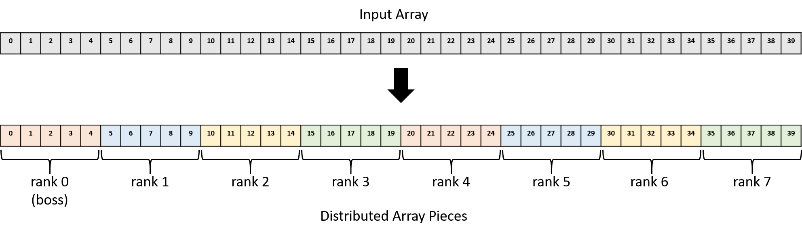

15.2. Hệ thống bộ nhớ phân tán, truyền thông điệp và MPI (Distributed Memory Systems, Message Passing, and MPI)
Chương 14 đã mô tả các cơ chế như
Pthreads và
OpenMP
mà các chương trình sử dụng để tận dụng nhiều lõi CPU trên một shared memory system (hệ thống bộ nhớ chia sẻ).
Trong các hệ thống như vậy, mỗi core chia sẻ cùng một phần cứng bộ nhớ vật lý, cho phép chúng trao đổi dữ liệu và đồng bộ hóa hoạt động bằng cách đọc và ghi vào các địa chỉ bộ nhớ chung.
Mặc dù shared memory system giúp việc giao tiếp trở nên tương đối dễ dàng, nhưng khả năng mở rộng của chúng bị giới hạn bởi số lượng core CPU trong hệ thống.
Tính đến năm 2019, CPU máy chủ thương mại cao cấp thường cung cấp tối đa 64 core.
Tuy nhiên, với một số tác vụ, ngay cả vài trăm core CPU cũng chưa đủ.
Ví dụ: hãy tưởng tượng việc mô phỏng động lực học chất lỏng của đại dương Trái Đất hoặc lập chỉ mục toàn bộ nội dung của World Wide Web để xây dựng một ứng dụng tìm kiếm.
Những tác vụ khổng lồ như vậy đòi hỏi nhiều bộ nhớ vật lý và bộ xử lý hơn bất kỳ máy tính đơn lẻ nào có thể cung cấp.
Do đó, các ứng dụng cần số lượng core CPU lớn sẽ chạy trên các hệ thống không sử dụng bộ nhớ chia sẻ.
Thay vào đó, chúng được thực thi trên các hệ thống được xây dựng từ nhiều máy tính, mỗi máy có CPU và bộ nhớ riêng, và giao tiếp qua mạng để phối hợp hoạt động.
Một tập hợp các máy tính làm việc cùng nhau được gọi là distributed memory system (hệ thống bộ nhớ phân tán), hoặc thường gọi ngắn gọn là distributed system (hệ thống phân tán).
Ghi chú về trình tự lịch sử
Mặc dù trong sách này chúng được trình bày sau, nhưng các nhà thiết kế hệ thống đã xây dựng distributed system từ lâu trước khi các cơ chế như thread hay OpenMP ra đời.
Một số hệ thống bộ nhớ phân tán tích hợp phần cứng chặt chẽ hơn các hệ thống khác.
Ví dụ: supercomputer (siêu máy tính) là một hệ thống hiệu năng cao, trong đó nhiều compute node (nút tính toán) được kết nối chặt chẽ với nhau thông qua một mạng liên kết tốc độ cao.
Mỗi compute node có CPU, GPU và bộ nhớ riêng, nhưng nhiều node có thể chia sẻ các tài nguyên phụ trợ như bộ nhớ lưu trữ thứ cấp hoặc nguồn điện.
Mức độ chia sẻ phần cứng cụ thể sẽ khác nhau giữa các siêu máy tính.
Ở phía đối lập, một ứng dụng phân tán có thể chạy trên một tập hợp lỏng lẻo (ít tích hợp) gồm các máy tính hoàn toàn độc lập (node), được kết nối bằng công nghệ mạng LAN truyền thống như Ethernet.
Một tập hợp node như vậy được gọi là commodity off-the-shelf (COTS) cluster.
COTS cluster thường sử dụng shared-nothing architecture (kiến trúc không chia sẻ), trong đó mỗi node có bộ phần cứng tính toán riêng (CPU, GPU, bộ nhớ và lưu trữ).
Hình 1 minh họa một hệ thống phân tán kiểu shared-nothing gồm hai máy tính dùng bộ nhớ chia sẻ.

Hình 1. Các thành phần chính của kiến trúc bộ nhớ phân tán kiểu shared-nothing được xây dựng từ hai compute node
15.2.1. Các mô hình xử lý song song và phân tán (Parallel and Distributed Processing Models)
Các nhà thiết kế ứng dụng thường tổ chức ứng dụng phân tán theo những mô hình đã được kiểm chứng.
Việc áp dụng các mô hình ứng dụng này giúp lập trình viên dễ dàng suy luận về ứng dụng, vì hành vi của nó sẽ tuân theo các chuẩn mực đã được hiểu rõ.
Mỗi mô hình đều có ưu điểm và nhược điểm riêng — không có giải pháp “một cho tất cả”.
Dưới đây là mô tả ngắn gọn một số mô hình phổ biến, lưu ý rằng đây không phải là danh sách đầy đủ.
Client/Server
Client/server model (mô hình khách/chủ) là một mô hình ứng dụng cực kỳ phổ biến, chia trách nhiệm của ứng dụng thành hai thành phần: client process (tiến trình khách) và server process (tiến trình chủ).
Một server process cung cấp dịch vụ cho các client yêu cầu thực hiện một tác vụ nào đó.
Server process thường lắng nghe tại các địa chỉ đã biết để nhận kết nối đến từ client.
Khi kết nối được thiết lập, client gửi yêu cầu đến server process, và server sẽ hoặc là đáp ứng yêu cầu đó (ví dụ: lấy về một tệp được yêu cầu) hoặc báo lỗi (ví dụ: tệp không tồn tại hoặc client không được xác thực hợp lệ).
Có thể bạn chưa để ý, nhưng bạn đang truy cập cuốn sách này thông qua mô hình client/server!
Trình duyệt web của bạn (client) đã kết nối đến một website (server) tại địa chỉ công khai diveintosystems.org để lấy nội dung của sách.
Pipeline
Pipeline model (mô hình đường ống) chia ứng dụng thành một chuỗi các bước riêng biệt, mỗi bước có thể xử lý dữ liệu một cách độc lập.
Mô hình này hoạt động tốt với các ứng dụng có quy trình làm việc tuyến tính, lặp đi lặp lại trên lượng dữ liệu đầu vào lớn.
Ví dụ: trong sản xuất phim hoạt hình máy tính, mỗi khung hình (frame) phải được xử lý qua một chuỗi các bước biến đổi (ví dụ: thêm texture hoặc áp dụng ánh sáng).
Vì mỗi bước diễn ra độc lập theo trình tự, các họa sĩ có thể tăng tốc quá trình render bằng cách xử lý song song nhiều khung hình trên một cụm máy tính lớn.
Boss/Worker
Trong boss/worker model (mô hình sếp/thợ), một process đóng vai trò điều phối trung tâm và phân chia công việc cho các process ở các node khác.
Mô hình này phù hợp với các bài toán cần xử lý một đầu vào lớn và có thể chia nhỏ.
Boss sẽ chia đầu vào thành các phần nhỏ hơn và giao một hoặc nhiều phần cho mỗi worker.
Trong một số ứng dụng, boss có thể gán tĩnh cho mỗi worker đúng một phần dữ liệu.
Trong các trường hợp khác, worker có thể liên tục hoàn thành một phần dữ liệu rồi quay lại boss để nhận phần tiếp theo một cách động.
Ở phần sau của mục này, chúng ta sẽ xem một ví dụ chương trình trong đó boss chia một mảng cho nhiều worker để thực hiện phép nhân vô hướng (scalar multiplication) trên mảng.
Lưu ý: mô hình này đôi khi còn được gọi bằng các tên khác như master/worker hoặc các biến thể khác, nhưng ý tưởng chính vẫn giống nhau.
Peer-to-Peer
Khác với boss/worker model, ứng dụng peer-to-peer (ngang hàng) không dựa vào một process điều khiển tập trung.
Thay vào đó, các peer process tự tổ chức ứng dụng thành một cấu trúc trong đó mỗi peer đảm nhận gần như cùng một mức trách nhiệm.
Ví dụ: trong giao thức chia sẻ tệp BitTorrent, mỗi peer liên tục trao đổi các phần của tệp với các peer khác cho đến khi tất cả đều nhận được toàn bộ tệp.
Do không có thành phần tập trung, ứng dụng peer-to-peer thường chịu lỗi tốt (robust) khi một node gặp sự cố.
Tuy nhiên, chúng thường đòi hỏi các thuật toán phối hợp phức tạp, khiến việc xây dựng và kiểm thử trở nên khó khăn.
15.2.2. Communication Protocols (Giao thức truyền thông)
Dù là một phần của supercomputer hay COTS cluster, các process trong hệ thống bộ nhớ phân tán giao tiếp với nhau thông qua message passing (truyền thông điệp), trong đó một process gửi tường minh một thông điệp đến một hoặc nhiều process ở node khác, và các process đó sẽ nhận thông điệp.
Việc sử dụng mạng như thế nào là tùy thuộc vào ứng dụng chạy trên hệ thống:
- Một số ứng dụng cần giao tiếp thường xuyên để phối hợp chặt chẽ hành vi của các process trên nhiều node.
- Một số ứng dụng khác chỉ giao tiếp để phân chia dữ liệu đầu vào lớn cho các process, sau đó chủ yếu làm việc độc lập.
Một ứng dụng phân tán sẽ chuẩn hóa kỳ vọng giao tiếp của mình bằng cách định nghĩa một protocol (giao thức), mô tả tập hợp các quy tắc điều khiển việc sử dụng mạng, bao gồm:
- Khi nào một process nên gửi thông điệp
- Gửi thông điệp cho process nào
- Cách định dạng thông điệp
Nếu không có protocol, ứng dụng có thể không diễn giải đúng thông điệp hoặc thậm chí rơi vào tình trạng deadlock.
Ví dụ: nếu một ứng dụng gồm hai process, và mỗi process đều chờ process kia gửi thông điệp trước, thì cả hai sẽ không bao giờ tiến triển.
Protocol giúp cấu trúc hóa việc giao tiếp, giảm khả năng xảy ra các lỗi như vậy.
Để triển khai một giao thức truyền thông, ứng dụng cần các chức năng cơ bản như:
- Gửi và nhận thông điệp
- Định danh process (addressing)
- Đồng bộ hóa việc thực thi của các process
Nhiều ứng dụng tìm đến Message Passing Interface (MPI) để có được các chức năng này.
15.2.3. Message Passing Interface (MPI)
Message Passing Interface (MPI) định nghĩa (nhưng không tự triển khai) một giao diện chuẩn mà các ứng dụng có thể sử dụng để giao tiếp trong distributed memory system (hệ thống bộ nhớ phân tán).
Bằng cách áp dụng chuẩn giao tiếp MPI, các ứng dụng trở nên portable (di động), nghĩa là chúng có thể được biên dịch và thực thi trên nhiều hệ thống khác nhau.
Nói cách khác, miễn là hệ thống có cài đặt một bản triển khai MPI, ứng dụng portable có thể chạy từ hệ thống này sang hệ thống khác và kỳ vọng hoạt động đúng, ngay cả khi các hệ thống đó có đặc điểm phần cứng khác nhau.
MPI cho phép lập trình viên chia một ứng dụng thành nhiều process.
Nó gán cho mỗi process của ứng dụng một định danh duy nhất gọi là rank, có giá trị từ 0 đến N-1 đối với ứng dụng có N process.
Một process có thể biết rank của mình bằng cách gọi hàm MPI_Comm_rank, và biết tổng số process đang chạy trong ứng dụng bằng cách gọi MPI_Comm_size.
Để gửi một thông điệp, process gọi MPI_Send và chỉ định rank của process nhận.
Tương tự, process gọi MPI_Recv để nhận thông điệp, và có thể chỉ định chờ thông điệp từ một node cụ thể hoặc nhận từ bất kỳ process nào (sử dụng hằng số MPI_ANY_SOURCE làm rank).
Ngoài các hàm gửi và nhận cơ bản, MPI còn định nghĩa nhiều hàm giúp một process dễ dàng gửi dữ liệu đến nhiều process khác.
Ví dụ: MPI_Bcast cho phép một process gửi thông điệp đến tất cả các process khác trong ứng dụng chỉ với một lời gọi hàm.
MPI cũng định nghĩa cặp hàm MPI_Scatter và MPI_Gather, cho phép một process chia một mảng và phân phối các phần cho các process khác (scatter), các process này sẽ xử lý dữ liệu, và sau đó thu thập lại toàn bộ dữ liệu để hợp nhất kết quả (gather).
Vì MPI chỉ đặc tả tập hợp các hàm và cách chúng hoạt động, mỗi nhà thiết kế hệ thống có thể triển khai MPI theo cách phù hợp với khả năng của hệ thống của họ.
Ví dụ: một hệ thống có mạng liên kết hỗ trợ broadcasting (gửi một bản sao thông điệp đến nhiều người nhận cùng lúc) có thể triển khai hàm MPI_Bcast hiệu quả hơn so với hệ thống không có hỗ trợ này.
15.2.4. MPI Hello World
Để giới thiệu về lập trình MPI, hãy xem chương trình “hello world” (hello_world_mpi.c) dưới đây:
#include <stdio.h>
#include <unistd.h>
#include "mpi.h"
int main(int argc, char **argv) {
int rank, process_count;
char hostname[1024];
/* Initialize MPI. */
MPI_Init(&argc, &argv);
/* Determine how many processes there are and which one this is. */
MPI_Comm_size(MPI_COMM_WORLD, &process_count);
MPI_Comm_rank(MPI_COMM_WORLD, &rank);
/* Determine the name of the machine this process is running on. */
gethostname(hostname, 1024);
/* Print a message, identifying the process and machine it comes from. */
printf("Hello from %s process %d of %d\n", hostname, rank, process_count);
/* Clean up. */
MPI_Finalize();
return 0;
}
Khi khởi chạy chương trình này, MPI sẽ đồng thời thực thi nhiều bản sao của nó dưới dạng các process độc lập trên một hoặc nhiều máy tính.
Mỗi process sẽ gọi các hàm MPI để xác định tổng số process đang chạy (MPI_Comm_size) và biết mình là process nào trong số đó (rank của process, với MPI_Comm_rank).
Sau khi có thông tin này, mỗi process sẽ in ra một thông điệp ngắn chứa rank và tên máy (hostname) mà nó đang chạy, rồi kết thúc.
Chạy mã MPI
Để chạy các ví dụ MPI này, bạn cần cài đặt một bản triển khai MPI như OpenMPI hoặc MPICH trên hệ thống của mình.
Để biên dịch ví dụ này, sử dụng chương trình biên dịch mpicc, đây là phiên bản của gcc có hỗ trợ MPI, để xây dựng chương trình và liên kết với các thư viện MPI:
$ mpicc -o hello_world_mpi hello_world_mpi.c
Để thực thi chương trình, dùng tiện ích mpirun để khởi chạy nhiều process song song với MPI.
Lệnh mpirun cần được chỉ định máy nào sẽ chạy process (--hostfile) và số lượng process chạy trên mỗi máy (-np).
Ví dụ: ta có tệp hosts.txt chỉ định cho mpirun tạo 8 process trên hai máy tính, một tên lemon và một tên orange:
$ mpirun -np 8 --hostfile hosts.txt ./hello_world_mpi
Hello from lemon process 4 of 8
Hello from lemon process 5 of 8
Hello from orange process 2 of 8
Hello from lemon process 6 of 8
Hello from orange process 0 of 8
Hello from lemon process 7 of 8
Hello from orange process 3 of 8
Hello from orange process 1 of 8
Thứ tự thực thi trong MPI
Bạn không bao giờ nên giả định về thứ tự thực thi của các process MPI.
Các process được khởi chạy trên nhiều máy, mỗi máy có hệ điều hành và bộ lập lịch process riêng.
Nếu tính đúng đắn của chương trình yêu cầu các process chạy theo một thứ tự nhất định, bạn phải đảm bảo thứ tự đó xảy ra — ví dụ: buộc một số process tạm dừng cho đến khi nhận được thông điệp.
15.2.5. Nhân vô hướng với MPI (MPI Scalar Multiplication)
Để có một ví dụ MPI thực tế hơn, hãy xét bài toán nhân vô hướng (scalar multiplication) trên một mảng.
Ví dụ này áp dụng mô hình boss/worker — một process đóng vai trò boss sẽ chia mảng thành các phần nhỏ hơn và phân phát cho các process worker.
Lưu ý rằng trong phần cài đặt nhân vô hướng này, process boss cũng hoạt động như một worker và thực hiện nhân một phần mảng sau khi đã phân phát các phần khác cho các worker.
Để tận dụng lợi ích của việc xử lý song song, mỗi process chỉ nhân phần mảng cục bộ của mình với giá trị vô hướng, sau đó tất cả các worker gửi kết quả trở lại cho boss để tạo thành kết quả cuối cùng.
Tại một số điểm trong chương trình, mã sẽ kiểm tra xem rank của process có bằng 0 hay không:
if (rank == 0) {
/* Đoạn mã này chỉ chạy ở process boss. */
}
Việc kiểm tra này đảm bảo rằng chỉ một process (process có rank 0) đóng vai trò boss.
Theo thông lệ, các ứng dụng MPI thường chọn rank 0 để thực hiện các tác vụ chỉ chạy một lần, vì bất kể có bao nhiêu process, luôn có một process được gán rank 0 (ngay cả khi chỉ chạy một process duy nhất).
Giao tiếp trong MPI (MPI Communication)
Process boss bắt đầu bằng việc xác định giá trị vô hướng và mảng đầu vào ban đầu.
Trong một ứng dụng tính toán khoa học thực tế, boss có thể đọc các giá trị này từ một tệp đầu vào.
Để đơn giản hóa ví dụ, boss sử dụng một giá trị vô hướng cố định (10) và tạo ra một mảng 40 phần tử (chứa dãy số từ 0 đến 39) để minh họa.
Chương trình này yêu cầu giao tiếp giữa các process MPI cho ba nhiệm vụ quan trọng:
- Boss gửi giá trị vô hướng và kích thước mảng cho tất cả các worker.
- Boss chia mảng ban đầu thành các phần và gửi mỗi phần cho một worker.
- Mỗi worker nhân các giá trị trong phần mảng của mình với giá trị vô hướng, sau đó gửi các giá trị đã cập nhật trở lại cho boss.
Phát giá trị quan trọng (Broadcasting Important Values)
Để gửi giá trị vô hướng đến các worker, chương trình ví dụ sử dụng hàm MPI_Bcast, cho phép một process MPI gửi cùng một giá trị đến tất cả các process MPI khác chỉ với một lời gọi hàm:
/* Boss gửi giá trị vô hướng đến mọi process bằng broadcast. */
MPI_Bcast(&scalar, 1, MPI_INT, 0, MPI_COMM_WORLD);
Lời gọi này gửi một số nguyên (MPI_INT), bắt đầu từ địa chỉ của biến scalar, từ process có rank 0 đến tất cả các process khác trong MPI_COMM_WORLD.
Tất cả các process worker (có rank khác 0) sẽ nhận broadcast này vào bản sao cục bộ của biến scalar, vì vậy khi lời gọi này hoàn tất, mọi process đều biết giá trị vô hướng cần sử dụng.
Hành vi của MPI_Bcast
Mọi process đều thực thiMPI_Bcast, nhưng hành vi sẽ khác nhau tùy thuộc vào rank của process gọi hàm.
Nếu rank trùng với tham số thứ tư, process đó đóng vai trò gửi.
Tất cả các process khác gọiMPI_Bcastsẽ đóng vai trò nhận.
Tương tự, boss sẽ broadcast (phát) kích thước tổng của mảng đến tất cả các process khác.
Sau khi biết tổng kích thước mảng, mỗi process sẽ thiết lập biến local_size bằng cách chia tổng kích thước mảng cho số lượng process MPI.
Biến local_size biểu thị số phần tử mà mỗi worker sẽ xử lý trong phần mảng được giao.
Ví dụ: nếu mảng đầu vào có 40 phần tử và ứng dụng gồm 8 process, thì mỗi process sẽ chịu trách nhiệm xử lý 5 phần tử của mảng (40 / 8 = 5).
Để đơn giản, ví dụ này giả định rằng số lượng process chia hết cho kích thước mảng:
/* Mỗi process xác định tổng số process đang chạy. */
MPI_Comm_size(MPI_COMM_WORLD, &process_count);
/* Boss gửi kích thước tổng của mảng đến mọi process bằng broadcast. */
MPI_Bcast(&array_size, 1, MPI_INT, 0, MPI_COMM_WORLD);
/* Xác định số phần tử mảng mà mỗi process sẽ nhận.
* Giả định mảng chia hết cho số lượng process. */
local_size = array_size / process_count;
Phân phối mảng (Distributing the Array)
Bây giờ, khi mỗi process đã biết giá trị vô hướng và số phần tử mình phải nhân, boss cần chia mảng thành các phần và phân phát cho các worker.
Lưu ý rằng trong cài đặt này, boss (rank 0) cũng tham gia như một worker.
Ví dụ: với mảng 40 phần tử và 8 process (rank 0–7), boss sẽ giữ các phần tử 0–4 cho mình (rank 0), gửi phần tử 5–9 cho rank 1, phần tử 10–14 cho rank 2, và cứ thế tiếp tục.
Hình 2 minh họa cách boss phân chia các phần mảng cho từng process MPI.

Hình 2. Phân phối mảng 40 phần tử cho 8 process MPI (rank 0–7)
Một cách để phân phối các phần mảng cho mỗi worker là kết hợp các lời gọi MPI_Send ở boss với một lời gọi MPI_Recv ở mỗi worker:
if (rank == 0) {
int i;
/* Với mỗi worker, gửi một phần mảng riêng biệt. */
for (i = 1; i < process_count; i++) {
/* Gửi local_size số nguyên bắt đầu từ chỉ số (i * local_size) */
MPI_Send(array + (i * local_size), local_size, MPI_INT, i, 0,
MPI_COMM_WORLD);
}
} else {
MPI_Recv(local_array, local_size, MPI_INT, 0, 0, MPI_COMM_WORLD,
MPI_STATUS_IGNORE);
}
Trong đoạn mã này, boss chạy một vòng lặp, mỗi vòng gửi cho một worker một phần mảng.
Dữ liệu được gửi bắt đầu từ địa chỉ array với offset (i * local_size) để đảm bảo mỗi worker nhận một phần mảng duy nhất.
Ví dụ: worker rank 1 nhận phần mảng bắt đầu từ chỉ số 5, rank 2 nhận từ chỉ số 10, v.v., như minh họa ở Hình 2.
Mỗi lời gọi MPI_Send gửi local_size (5) số nguyên (20 byte) đến process có rank i.
Tham số 0 gần cuối là message tag (thẻ thông điệp) — một tính năng nâng cao mà chương trình này không cần, nên đặt là 0 để xử lý tất cả thông điệp như nhau.
Tất cả worker gọi MPI_Recv để nhận phần mảng của mình và lưu vào vùng nhớ mà local_array trỏ tới.
Chúng nhận local_size (5) số nguyên (20 byte) từ node có rank 0.
Lưu ý rằng MPI_Recv là một lời gọi blocking (chặn), nghĩa là process gọi nó sẽ tạm dừng cho đến khi nhận được dữ liệu.
Vì MPI_Recv chặn, nên không worker nào tiếp tục xử lý cho đến khi boss gửi phần mảng của nó.
Thực thi song song (Parallel Execution)
Sau khi worker nhận được phần mảng của mình, nó có thể bắt đầu nhân từng giá trị mảng với giá trị vô hướng.
Vì mỗi worker nhận một tập con duy nhất của mảng, chúng có thể thực thi độc lập, song song, mà không cần giao tiếp thêm.
Tổng hợp kết quả (Aggregating Results)
Cuối cùng, sau khi các worker hoàn tất phép nhân, chúng gửi các giá trị mảng đã cập nhật trở lại cho boss, và boss sẽ tổng hợp kết quả.
Khi sử dụng MPI_Send và MPI_Recv, quá trình này trông tương tự như đoạn mã phân phối mảng ở trên, chỉ khác là vai trò người gửi và người nhận được đảo ngược.
if (rank == 0) {
int i;
for (i = 1; i < process_count; i++) {
MPI_Recv(array + (i * local_size), local_size, MPI_INT, i, 0,
MPI_COMM_WORLD, MPI_STATUS_IGNORE);
}
} else {
MPI_Send(local_array, local_size, MPI_INT, 0, 0, MPI_COMM_WORLD);
}
Hãy nhớ rằng MPI_Recv là một lời gọi blocking (chặn) hoặc tạm dừng thực thi, vì vậy mỗi lần gọi trong vòng lặp for sẽ khiến boss phải chờ cho đến khi nhận được một phần mảng từ worker i.
Scatter/Gather
Mặc dù các vòng lặp for trong ví dụ trước phân phối dữ liệu đúng cách bằng MPI_Send và MPI_Recv, nhưng chúng không thể hiện một cách ngắn gọn ý định đằng sau thao tác này.
Nói cách khác, với MPI, chúng chỉ đơn thuần là một chuỗi các lời gọi gửi và nhận, mà không thể hiện rõ mục tiêu phân phối một mảng cho các process MPI.
Vì các ứng dụng song song thường xuyên cần phân phối và thu thập dữ liệu (như mảng trong ví dụ này), MPI cung cấp các hàm chuyên biệt cho mục đích này: MPI_Scatter và MPI_Gather.
Hai hàm này mang lại hai lợi ích chính:
- Cho phép toàn bộ các khối mã ở trên được viết gọn lại thành một lời gọi hàm MPI duy nhất, giúp mã ngắn gọn hơn.
- Thể hiện ý định của thao tác cho trình triển khai MPI bên dưới, từ đó có thể tối ưu hóa hiệu năng tốt hơn.
Để thay thế vòng lặp đầu tiên ở trên, mỗi process có thể gọi MPI_Scatter:
/* Boss phân tán các phần mảng đều nhau cho tất cả các process. */
MPI_Scatter(array, local_size, MPI_INT, local_array, local_size, MPI_INT,
0, MPI_COMM_WORLD);
Hàm này sẽ tự động phân phối nội dung bộ nhớ bắt đầu tại array thành các phần có local_size số nguyên, và gửi đến biến đích local_array.
Tham số 0 chỉ định rằng process có rank 0 (boss) là người gửi, do đó nó đọc và phân phối dữ liệu từ array đến các process khác (bao gồm cả việc gửi một phần cho chính nó).
Mọi process khác đóng vai trò người nhận và nhận dữ liệu vào biến local_array của mình.
Sau lời gọi duy nhất này, các worker có thể nhân phần mảng của mình song song.
Khi hoàn tất, mỗi process sẽ gọi MPI_Gather để tổng hợp kết quả trở lại biến array của boss:
/* Boss thu thập các phần mảng từ tất cả các process và hợp nhất
* kết quả thành mảng cuối cùng. */
MPI_Gather(local_array, local_size, MPI_INT, array, local_size, MPI_INT,
0, MPI_COMM_WORLD);
Lời gọi này hoạt động ngược lại với MPI_Scatter: lần này, tham số 0 chỉ định rằng process có rank 0 (boss) là người nhận, do đó nó sẽ cập nhật biến array, còn các worker sẽ gửi local_size số nguyên từ biến local_array của mình.
Mã đầy đủ cho MPI Scalar Multiply
Dưới đây là mã đầy đủ cho chương trình nhân vô hướng với MPI sử dụng MPI_Scatter và MPI_Gather
(scalar_multiply_mpi.c):
#include <stdio.h>
#include <stdlib.h>
#include "mpi.h"
#define ARRAY_SIZE (40)
#define SCALAR (10)
/* In a real application, the boss process would likely read its input from a
* data file. This example program produces a simple array and informs the
* caller of the size of the array through the array_size pointer parameter.*/
int *build_array(int *array_size) {
int i;
int *result = malloc(ARRAY_SIZE * sizeof(int));
if (result == NULL) {
exit(1);
}
for (i = 0; i < ARRAY_SIZE; i++) {
result[i] = i;
}
*array_size = ARRAY_SIZE;
return result;
}
/* Print the elements of an array, given the array and its size. */
void print_array(int *array, int array_size) {
int i;
for (i = 0; i < array_size; i++) {
printf("%3d ", array[i]);
}
printf("\n\n");
}
/* Multiply each element of an array by a scalar value. */
void scalar_multiply(int *array, int array_size, int scalar) {
int i;
for (i = 0; i < array_size; i++) {
array[i] = array[i] * scalar;
}
}
int main(int argc, char **argv) {
int rank, process_count;
int array_size, local_size;
int scalar;
int *array, *local_array;
/* Initialize MPI */
MPI_Init(&argc, &argv);
/* Determine how many processes there are and which one this is. */
MPI_Comm_size(MPI_COMM_WORLD, &process_count);
MPI_Comm_rank(MPI_COMM_WORLD, &rank);
/* Designate rank 0 to be the boss. It sets up the problem by generating
* the initial input array and choosing the scalar to multiply it by. */
if (rank == 0) {
array = build_array(&array_size);
scalar = SCALAR;
printf("Initial array:\n");
print_array(array, array_size);
}
/* Boss sends the scalar value to every process with a broadcast.
* Worker processes receive the scalar value by making this MPI_Bcast
* call. */
MPI_Bcast(&scalar, 1, MPI_INT, 0, MPI_COMM_WORLD);
/* Boss sends the total array size to every process with a broadcast.
* Worker processes receive the size value by making this MPI_Bcast
* call. */
MPI_Bcast(&array_size, 1, MPI_INT, 0, MPI_COMM_WORLD);
/* Determine how many array elements each process will get.
* Assumes the array is evenly divisible by the number of processes. */
local_size = array_size / process_count;
/* Each process allocates space to store its portion of the array. */
local_array = malloc(local_size * sizeof(int));
if (local_array == NULL) {
exit(1);
}
/* Boss scatters chunks of the array evenly among all the processes. */
MPI_Scatter(array, local_size, MPI_INT, local_array, local_size, MPI_INT,
0, MPI_COMM_WORLD);
/* Every process (including boss) performs scalar multiplication over its
* chunk of the array in parallel. */
scalar_multiply(local_array, local_size, scalar);
/* Boss gathers the chunks from all the processes and coalesces the
* results into a final array. */
MPI_Gather(local_array, local_size, MPI_INT, array, local_size, MPI_INT,
0, MPI_COMM_WORLD);
/* Boss prints the final answer. */
if (rank == 0) {
printf("Final array:\n");
print_array(array, array_size);
}
/* Clean up. */
if (rank == 0) {
free(array);
}
free(local_array);
MPI_Finalize();
return 0;
}
Trong hàm main, boss thiết lập bài toán và tạo mảng.
Nếu đây là một bài toán thực tế (ví dụ: ứng dụng tính toán khoa học), boss có thể đọc dữ liệu ban đầu từ một tệp đầu vào.
Sau khi khởi tạo mảng, boss cần gửi thông tin về kích thước mảng và giá trị vô hướng dùng để nhân đến tất cả các worker, vì vậy nó broadcast các biến này đến mọi process.
Khi mỗi process đã biết kích thước mảng và số lượng process, chúng có thể tự tính toán để xác định số phần tử mình phải xử lý.
Để đơn giản, mã này giả định rằng mảng chia hết cho số lượng process.
Boss sau đó sử dụng hàm MPI_Scatter để gửi một phần mảng bằng nhau cho mỗi worker (bao gồm cả chính nó).
Khi đã có đủ thông tin, mỗi worker sẽ thực hiện phép nhân trên phần mảng của mình song song.
Cuối cùng, khi các worker hoàn tất, boss thu thập từng phần mảng từ các worker bằng MPI_Gather để tạo ra kết quả cuối cùng.
Quá trình biên dịch và chạy chương trình này như sau:
$ mpicc -o scalar_multiply_mpi scalar_multiply_mpi.c
$ mpirun -np 8 --hostfile hosts.txt ./scalar_multiply_mpi
Initial array:
0 1 2 3 4 5 6 7 8 9 10 11 12 13 14 15 16 17 18 19
20 21 22 23 24 25 26 27 28 29 30 31 32 33 34 35 36 37 38 39
Final array:
0 10 20 30 40 50 60 70 80 90 100 110 120 130 140 150 160 170 180 190
200 210 220 230 240 250 260 270 280 290 300 310 320 330 340 350 360 370 380 390
15.2.6. Những thách thức của hệ thống phân tán (Distributed Systems Challenges)
Nhìn chung, việc phối hợp hành vi của nhiều process trong các distributed system (hệ thống phân tán) là một nhiệm vụ nổi tiếng là khó khăn.
Nếu một thành phần phần cứng (ví dụ: CPU hoặc bộ nguồn) bị hỏng trong shared memory system (hệ thống bộ nhớ chia sẻ), toàn bộ hệ thống sẽ ngừng hoạt động.
Tuy nhiên, trong một hệ thống phân tán, các node độc lập có thể hỏng riêng lẻ.
Ví dụ: một ứng dụng phải quyết định cách tiếp tục nếu một node biến mất trong khi các node khác vẫn đang chạy.
Tương tự, mạng liên kết giữa các node có thể gặp sự cố, khiến mỗi process tưởng rằng tất cả các process khác đều đã hỏng.
Hệ thống phân tán cũng gặp thách thức do thiếu phần cứng chia sẻ, đặc biệt là đồng hồ (clocks).
Do độ trễ truyền mạng không thể dự đoán, các node độc lập không thể dễ dàng xác định thứ tự mà các thông điệp được gửi đi.
Việc giải quyết những thách thức này (và nhiều vấn đề khác) nằm ngoài phạm vi của cuốn sách này.
May mắn thay, các nhà thiết kế phần mềm phân tán đã xây dựng nhiều framework giúp đơn giản hóa việc phát triển ứng dụng phân tán.
Chúng ta sẽ mô tả một số framework này trong phần tiếp theo.
Tài nguyên MPI (MPI Resources)
MPI là một tiêu chuẩn lớn và phức tạp, và phần này mới chỉ đề cập đến một phần rất nhỏ.
Để tìm hiểu thêm về MPI, chúng tôi gợi ý:
- MPI tutorial của Lawrence Livermore National Lab, tác giả Blaise Barney.
- MPI Patterns của CSinParallel.